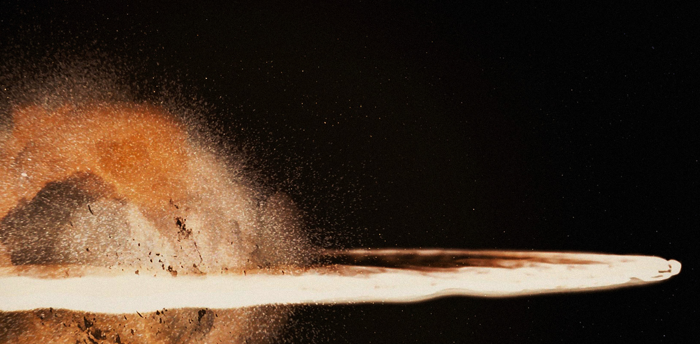

Bail and Breha Organa
Time of death: 0 BBY (Before the Battle of Yavin) -
Place of death: Alderaan
Owen Lars became the stepbrother to Anakin Skywalker after his father, Cliegg, married Shmi Skywalker. When Obi-wan Kenobi contacts Owen in 19 BBY with the task of taking care of Anakin’s infant son, Luke, it is revealed that Cliegg had since passed away and Owen married his girlfriend Beru.
In 0 BBY, Owen and Luke purchased the droid R2-D2, who, unbeknownst to them, contained stolen plans for the Imperial superweapon, the Death Star. Stormtroopers tracked the droid to the Lars’ homestead where they interrogated and burned both Owen and Beru alive while Luke was away.
